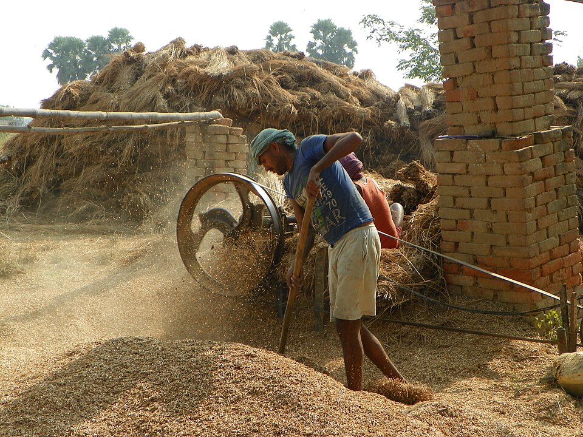
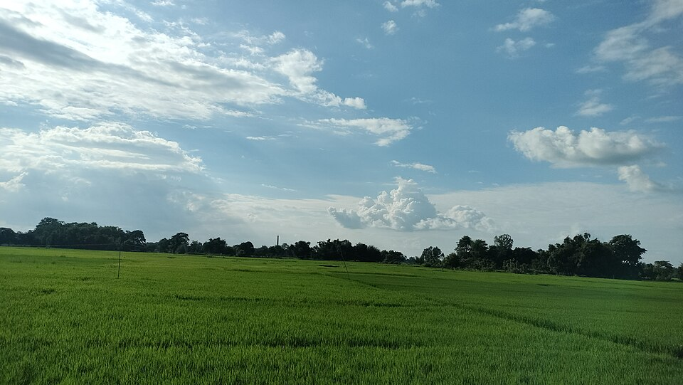

Trade & Industry
Where Tradition Meets Enterprise
Explore the businesses, markets, industries and opportunities shaping Buxar's economic future.
The Economy of Buxar
Built on Enterprise, Trade & Opportunity
Buxar's economy rests on a long tradition of local commerce. Agriculture and food businesses anchor daily life, while retail, transport and small enterprises keep the district's markets moving. A growing digital presence is opening new routes for local producers and sellers to reach customers.
This overview describes broad themes only. Specific figures are added once verified by editorial sources.

Agriculture & Local Commerce
From Local Production to Local Markets
The link between farmer, trader and consumer runs through Buxar's local markets. Agricultural produce, food products and everyday goods move from farms and small workshops into shops and marketplaces across the district.
Explore Local Commerce
Buxar Business Ecosystem
A District of Enterprises
Every category below connects to the Business Directory. Listings appear as local businesses are added and verified.
Trade Across Buxar
Commerce in Every Corner
Each of the district's six areas carries its own commercial character — from the busy markets of Buxar Town to the agricultural trade of the surrounding blocks.
From Local Trade to Digital Marketplace
Take Buxar's Commerce Online
Discover how local businesses and products can reach customers through TheBuxar.com.
Discover local businesses and services.
Search shops, services, hospitals, schools and trades across all six areas of the district.
Explore Businesses → MarketplaceDiscover products from local sellers.
Shop local food, handloom, handicrafts and everyday essentials from sellers across Buxar.
Shop Local →Opportunities in Buxar
Possibilities Across the District
These themes communicate where local enterprise can grow. They describe possibilities, not financial returns.
Join the Growth
Be Part of Buxar's Growing Economy
Discover businesses, connect with local commerce and explore opportunities across Buxar.